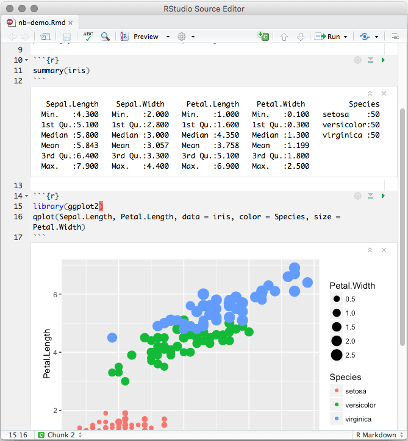

Como funciona o R Markdown?
Este documento abaixo é um arquivo de R Markdown. Estes documentos possuem terminação .rmd, e são apenas arquivos simples de texto.
---
title: "example_markdown"
author: "Tiago Ventura"
date: "2/8/2021"
output: html_document
---
```{r setup, include=FALSE}
knitr::opts_chunk$set(echo = TRUE)
```
## R Markdown
This is an **R Markdown document**. Markdown is a simple formatting syntax for authoring HTML, PDF, and MS Word documents. For more details on using R Markdown see <http://rmarkdown.rstudio.com>.
```{r cars}
summary(cars)
```
You can also embed plots, for example:
```{r pressure, echo=FALSE}
plot(pressure)
```
Note that the `echo = FALSE` parameter was added to the code chunk to prevent printing of the R code that generated the plot.Este documento possui três componentes:
YAML Header: As primeiras linhas entre
---e---Chuncks de Código de R: Linhas entre
{} e.Texto fora dos códigos e misturado com marcações como
#e***
YAML Header (Formato).
O YAML controla o formato, estilo e informações gerais do seu documento em Markdown. Por exemplo:
---
title: "example_markdown"
author: "Tiago Ventura"
date: "2/8/2021"
output: html_document
---Há diversas alterações básicas que você pode fazer diretamente no YAML: o título do documento, o autor, a data. Além disto, você pode alterar o output. Este código abaixo vai gerar um pdf, ao invés de um html.
---
title: "example_markdown"
author: "Tiago Ventura"
date: "2/8/2021"
output: pdf_document
---## Error: <text>:8:0: unexpected end of input
## 6: ---
## 7:
## ^Templates
Há diversos templates pré-construídos de R Markdown para você gerar documentos on-line. Estes templates são instalados como pacotes em R, e alteram a informação do YAML para produzir formatos diferentes dos documentos.
Por exemplo, eu sou um fã dos templates criados pelo pacote rmdformats. Veja algumas opções aqui. Vamos primeiro instalar o pacote.
install.packages("rmdformats")Em seguida, você pode criar documentos com formato distintos e super bem formatos. Por exemplo: este YAML gerará um html no estilo down_cute
---
title: ""
date: "`r Sys.Date()`"
output:
rmdformats::html_clean:
---knitr::include_graphics("figs/down_cute.png")
Eu aconselho a não alterar o YAML diretamente quando você estiver ainda aprendendo a programar. Você pode usar novos formatos via RStudio: file -> new_file -> R Markdown -> from template.
Chuncks (Código)
Para executar o código dentro de um documento R Markdown, você fará uso dos “chunks”. Estes “chuncks” seguem exatamente a lógica de seu nome: são pedações de código de R dentro de um documento de texto.
Os “chunks” começam com um cabeçalho que consiste em \(```{r}\) e o final do bloco é indicado por um $ ``$. Tudo entre estes dois sinais são lidos como um script de R. Você executar o código dentro de cada chunck usando o atalho de teclado que aprendemos anteriormente:Cmd / Ctrl + Enter`.
Para criar um “chunk” novo, você pode usar o atalho: Cmd / Ctrl + alt + i. Ou usar o botão insert + R no topo a direita do seu script.
Ao executar um “chunk”, o resulto aparecerá em uma tela a seguir do seu código. Este será o resultado final a ser incluso no seu documento de R Markdown
knitr::include_graphics("figs/notebook-demo.png")
Texto (Escrita)
Textos em R Markdown utilizam, como o nome diz, a sintaxe do Markdown. Como falamos antes, o Markdown é uma linguagem simples, level, e que utiliza determinadas marcações para compilar documentos mais complexos.
Estas são as regras mais simples de Markdown
Text formatting
------------------------------------------------------------
*italic* or _italic_
**bold** __bold__
`code`
superscript^2^ and subscript~2~
Headings
------------------------------------------------------------
# 1st Level Header
## 2nd Level Header
### 3rd Level Header
Lists
------------------------------------------------------------
* Bulleted list item 1
* Item 2
* Item 2a
* Item 2b
1. Numbered list item 1
1. Item 2. The numbers are incremented automatically in the output.
Links and images
------------------------------------------------------------
<http://example.com>
[linked phrase](http://example.com)

Tables
------------------------------------------------------------
First Header | Second Header
------------- | -------------
Content Cell | Content Cell
Content Cell | Content CellA melhor maneira de aprender isso é simplesmente experimentá-los. Levará alguns dias, mas logo você escreverá tão facilmente quanto usando word.
Se você se esquecer, pode obter uma folha de referência útil em Help > Markdown Quick Reference
Compilando.
Após você finalizar seu documento (definit a YAML, escrever seus códigos, e escrever o texto), você precisa compilar todas essas informações em um documento unificado a ser convertido para html, pdf, ou doc.
Para compilar, você pode manualmente apertar no botão knit no topo do seu código.
Muitas vezes, o simples ato de compilar o documento, pode retornar erros. Aqui vão alguns dos erros mais comuns:
Você não instalou ou ativou um determinado pacote.
Você está acessando um banco de dados, e seu endereço (path) está equivocado.
Você apagou um objeto no meio do documento, e depois tenta acessá-lo de novo.
Algumas sugestões:
Sempre cheque seu path. O RMD usa a sua localização como diretório de trabalho no processo de compilamento.
Leia as mensagens de erro com calma, e verifique em qual linha, ou chunk, está o erro.
Rode primeiro todos os chunks de código. Verifique se há algo errado, e corrija.
Não desista! Use o google.
Opções dos Chunks.
Os “chunks” de código possuem diversas opções de customização. Estas opções são bastante úteis quando estamos trabalhando em documentos mais complexos.
Essas opções são incluídas no nome do “chunk”, separado por vírgulas. Por exemplo:
#```{r, echo=FALSE, warning=FALSE, error=FALSE}
#```Segue abaixo uma tabela sintetizando as opções dos chunks. De longe, as mais úteis são:
eval=FALSE: seu código é adicionado ao documento final, porém não é avaliado pelo R.echo=FALSE: seu código não é adicionado ao documento final, porém é avaliado pelo R.
Tabela de Opções dos Chunks.
| Option | Run code | Show code | Output | Plots | Messages | Warnings |
|---|---|---|---|---|---|---|
eval = FALSE |
X | X | X | X | X | |
include = FALSE |
X | X | X | X | X | |
echo = FALSE |
X | |||||
results = "hide" |
X | |||||
fig.show = "hide" |
X | |||||
message = FALSE |
X | |||||
warning = FALSE |
X |